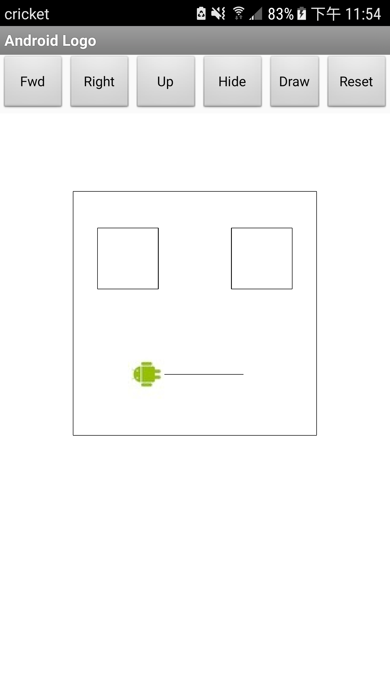

1)Include a screenshot of your app's face drawing, and the code involved, showing the use of a loop and a procedure. You can take a screenshot on most Android devices by pressing the power button and the volume down button and the same time and then emailing the photo from the gallery to yourself, or uploading the image to Google Drive. To practice for the Create task, describe how two of the algorithms (procedures that you wrote) in the code combine to form a bigger algorithm (the drawFace procedure).

2)Can you draw a triangle with this set of Logo commands? Discuss how or why not.
No beacuse it only go 90 degrees angle.You need to turn the angle to draw a triangle.
3)Discuss: If you were designing the Logo language, how would you change some of our basic commands so that it would be easy to draw a triangle and easier to draw other shapes -- i.e., what should the basic commands do that would make drawing easier.
I would add a turn #degree angle so that it would be easy to draw a triangle and easier to draw other shapes.
4)What weaknesses do you find in using the procedures (the abstractions) we gave you -- forward, turn -- for drawing simple shapes? How would you change the definitions of these procedures to make it easier to draw shapes? Give a specific example that illustrates how a more powerful set of procedures would improve things.
The weaknesses I find in using the procedures is that you can only draw a straight line,and only turn 90degree angle.I would make a turn ?# degree angle,go forward ?#inches to make it easier to draw shapes and create a draw a circle button.